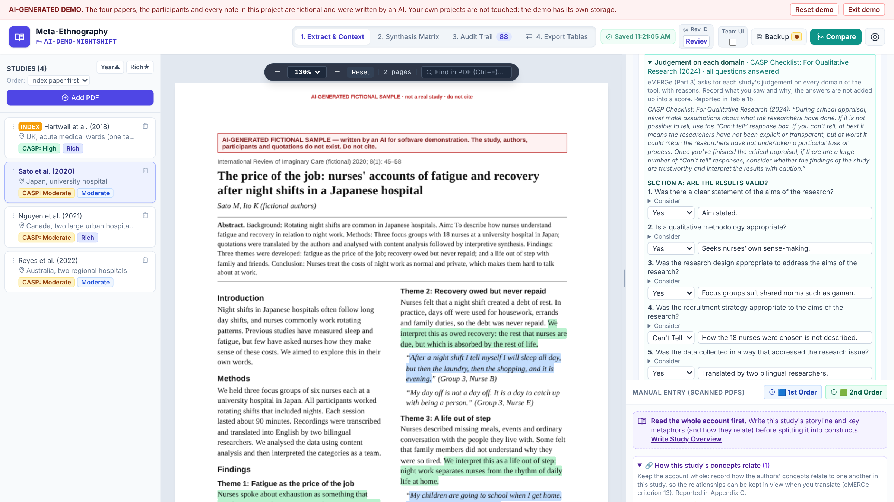
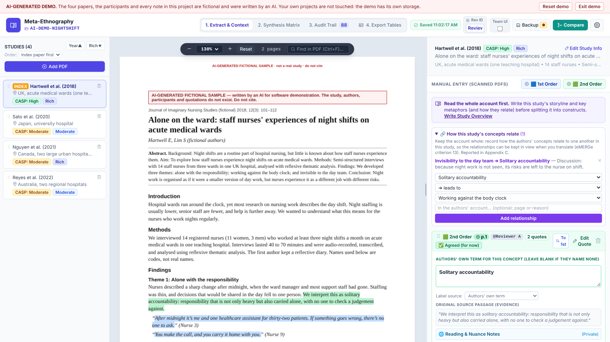
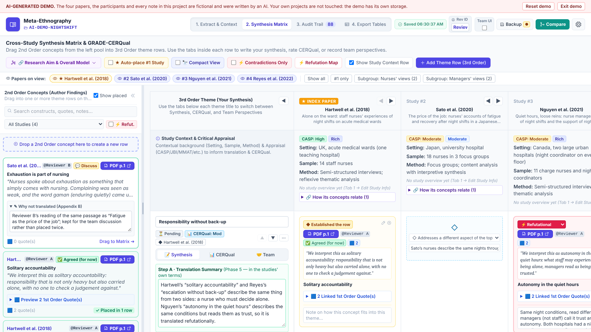
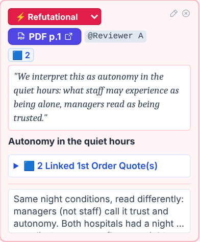
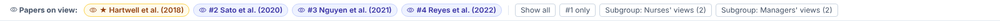
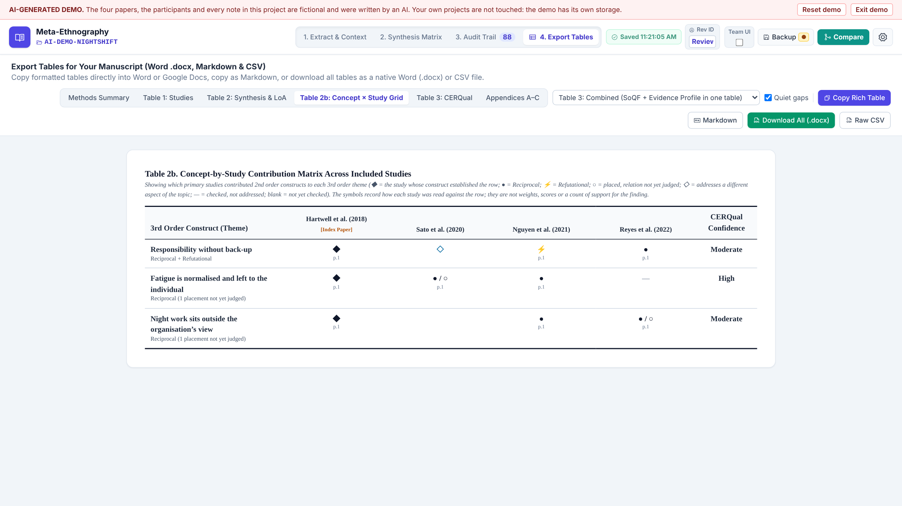

Getting Started, Reviewer ID & Saving
Meta-Ethnography Canvas is designed specifically for the post-screening synthesis phases (phases 1 and 3–7 of Noblit and Hare's seven phases, by which eMERGe organises its reporting criteria; the Phase 1 aim is entered in the startup setup window). Literature database searching, deduplication, title/abstract screening, and PRISMA flow diagram tracking are outside the scope of this tool.
Please complete your systematic search and study selection in your preferred reference manager or screening tool (such as Zotero, EndNote, Rayyan, or Covidence) first, and then import the final set of included full-text PDFs here for deep reading, appraisal, and conceptual translation.
The manual covers every feature, but you can start small: add your PDFs, highlight 1st and 2nd Order constructs, and place them in rows in the matrix. That is already a working synthesis. The rest can come when you need it: judging each placement Reciprocal or Refutational as you read across studies, the Line of Argument once themes settle, and CERQual, reasons for constructs left out, and the reporting fields when you write up. The Methods Summary in Tab 4 shows what is still missing, and the audit trail records your decisions in the background from the start.
- Desktop or Laptop Computer: Because meta-ethnography involves reading full-text PDFs side-by-side and dragging concepts across wide synthesis matrices, the workspace is designed for desktop/laptop screens with a mouse or trackpad (smartphones and small tablets are not supported).
- Online or Offline: Your PDFs and synthesis data always stay private in your browser. The online version needs an internet connection to open the page; the offline edition (a ZIP file—extract it and double-click
me_canvas.html) runs with no connection at all. The two keep separate data: use Backup and Restore Project to move a project between them. In Firefox and Safari, the offline edition's data is also tied to the folder it is opened from: a moved folder, or a new version extracted to a new folder, does not show an earlier project (it is not lost; open the old folder again). To update, make a Backup in the old version and Restore it in the new one, or replace the files in the same folder. - Recommended Browsers: Up-to-date versions of Google Chrome, Microsoft Edge, Firefox, or Safari.
1.1 Project Code & Reviewer ID
When you open the app for the first time, a setup window will ask for your Reviewer ID (your name or initials, e.g., DYJ) and a Project Code (e.g., NURSING-2026).
- Reviewer ID: Every quote you extract and theme you create will automatically carry your tag (such as @DYJ). You can change it anytime in the top bar (Rev ID).
- Project Code: This unique code prevents you from accidentally merging or overwriting backup files from a different systematic review project.
- Phase 1 Aim: You can optionally enter your research question here; it will be displayed in your Research Aim & Overall Model drawer (Tab 2) to keep you focused during synthesis.
1.2 How Saving & Backups Work (Important)
Auto-Save: All of your work—including uploaded PDFs, highlights, matrix rows, and notes—is saved automatically inside your web browser's local database (IndexedDB). A green Saved badge appears in the top bar whenever you make a change. A note is entered in the Audit Trail when you leave its box; if you close the tab while still typing in one, the browser asks you to confirm leaving, so that the entry can be written.
Because browser storage stays on your current computer and browser, clearing your browser data or switching computers will not carry your project over automatically.
- Click Backup in the top bar at the end of each work session to download a small
.jsonproject file. The file name ends with the date and time (to the second), so earlier backups are never overwritten. - A small badge on the Backup button shows how long you have been working without a backup: ● = changes since the last backup, 3d = unsaved for 3 days (turns red after 7 days). Downloading a backup clears it.
- Use the Settings Menu (⚙️) ➔ Restore Project to load your
.jsonbackup on any computer.- PDFs are not in the backup: to respect publisher copyright and keep the file small, the
.jsonholds your analysis but not the PDF files. Drag and drop the original PDFs back onto the screen and they reconnect to your highlights automatically: by file name, or, if a file was renamed, by its contents (the backup keeps a fingerprint of each PDF, so the identical file is recognised). - Missing PDFs: after a restore, a window lists the studies whose PDF is still missing and lets you select the files right away. A file that still does not match (for example a different copy of the paper) is listed with a picker, so you can connect it to the right study by hand (the likeliest one is listed first). The window closes by itself once all are reconnected.
- Clean restore or merge: when this browser already holds work, Restore asks which one you want, with a button for each; Cancel (or Esc) changes nothing. A backup from another project can only replace the workspace, never be merged into it. A clean restore replaces the project in this browser (and clears the Undo history, so Ctrl+Z cannot bring back items of the previous project). A merge keeps everything you have and only adds what is not here yet; where an item exists in both with different content, your version is kept and the item is listed after the merge and in the Audit Trail. Empty fields (for example an empty Research Aim) are filled from the backup. To look at the backup's version of the listed items side by side and adopt parts of it, open the backup with Compare.
- Versions: a backup made with version 1.4.7 or later opens in every later version with the same meaning. A backup made with a newer version than the app you are using is not opened (nothing is changed): update the app, or download the latest offline edition. Backups from before 1.4.7 open on a best-effort basis.
- PDFs are not in the backup: to respect publisher copyright and keep the file small, the
Tab 1: Extract & Context
Tab 1 is your reading and extraction workspace. It is divided into three columns: your Study List on the left, the PDF Reader in the center, and a resizable Study Details & Extracted Concepts sidebar on the right.
2.1 Adding Studies, Setting the Index Paper & Quick Sorting
- Click + Add PDF in the left sidebar (or drag and drop PDF files anywhere on the window).
- DOI and file fingerprint: When a PDF is added, the app reads its DOI (from the PDF's metadata or page 1; you can correct it in Edit Study Info) and stores a fingerprint of the file. Both are used only to recognise the same paper in a co-reviewer's backup, even if the file was renamed.
- Index Paper (#1): The study at the top of the left sidebar is automatically marked with an orange Index badge (#1 · Earliest or #1 if you set the translation order to Chronological or Other). It appears as the first column in your Synthesis Matrix.
- Quick sorting: Use the Year▲ button to sort studies chronologically by publication year, or Rich★ to sort by Conceptual Richness (richest first; how ties are handled is in 2.3). The study at #1 is your Index Paper: it is your choice, and you can change it. You can also drag and drop studies manually at any time. Every order change is automatically logged in your Audit Trail.
- Changing #1 after you have started translating: Study #1 is where translation starts, and the rows you started from it are established by it (see 3.2). Changing #1 does not change which study established a row, and no judgement is changed. Every row established by the former #1 gets an amber ⚠ Study #1 changed after this row was built box in Tab 2, because the translation order it was built on has changed: re-read the row and check whether it and its title still hold. If the new #1 should establish the row instead (and has a construct in it), click Make … the base: the former #1 is then translated into the row, so judge its cards. Otherwise click Re-read · mark as reviewed (you can note what you checked). Until then, Table 2 marks the row as not yet re-read. This also happens when #1 is deleted or a sort puts another study first.
2.2 Reading PDFs, Zooming & Searching Inside PDFs
- Zoom Controls: Use the floating dark toolbar at the top of the PDF viewer to select a zoom level from the dropdown menu (
50%to300%, default130%) or click the −, +, and Reset buttons. - Full-PDF Keyword Search (Ctrl+F / Cmd+F): Type any word into the
Find in PDF...box in the floating toolbar and press Enter (or Shift+Enter for previous) to jump across matching pages and highlight matching text spans.
2.3 Entering Study Details, Auto-Fill & Quality Appraisal
Click the study header at the top of the right sidebar (✏️ Edit Study Info) to open the study information drawer. Each field is saved when you leave it (also when you go to another study or tab without clicking Save):
- ✨ Auto-fill (Page 1): Click the purple ✨ Auto-fill (Page 1) button at the top of the drawer to automatically detect the First Author, Publication Year, and Full Title using the PDF's internal metadata and the layout of Page 1.
- Quick Fill from Selection: While the Edit Study Info drawer is open, select any text in the PDF and click the quick buttons (
➔ Author,➔ Year,➔ Title,➔ Setting,➔ Sample,➔ Method) in the popup menu—or drag selected text directly into the input boxes. - Quality Appraisal & Conceptual Depth: Choose your appraisal tool (CASP, JBI, MMAT, ETQS, Dixon-Woods, or Custom), record your overall judgement (High / Moderate / Low / Not appraised; your own judgement, not a sum of answers), and rate the paper's Conceptual Depth (Richness) as Rich (Detailed), Moderate, or Thin (Basic / Descriptive).
- What counts as Rich, Moderate or Thin: The app does not fix the criteria: agree them in the team before rating, apply them to every study, and describe them in your methods. A published reference point is the data richness scale of Ames, Glenton & Lewin (2019), made for purposive sampling in a Cochrane qualitative evidence synthesis. In its revised form (their Table 3) it places a study on a 1–5 scale by the amount and depth of the qualitative data that relate to the synthesis objective: from very little data, fairly descriptive (1), through a reasonable amount, as in a typical article using simple thematic analysis (3), to a large amount and depth, as in a detailed ethnography (5). Ames et al. rate the data; for translation you also need to judge how far the authors develop their interpretation (concepts or metaphors and how they relate, grounded in participant quotes). One way to combine the two: Rich ≈ 4–5 on Ames et al.'s scale with developed interpretive concepts; Moderate ≈ 3, or more data but little interpretation; Thin ≈ 1–2, mostly descriptive themes or lists. This mapping is a suggestion, not part of their scale: state the criteria you used. Richness is judged against your review question, and it is a different judgement from quality appraisal: a paper with serious methodological limitations can be conceptually rich, and the reverse. Ames et al. used the scale to choose which studies to include; here it only informs which study to start from, and the Index Paper stays your reasoned choice.
- Judgement on each question (CASP): With CASP selected, open Judgement on each domain to answer each question of the CASP Checklist: For Qualitative Research (2024) with Yes / No / Can't Tell and write why, from what you saw in the paper. Each question has its CASP Consider prompts, and the CASP Appraisal summary (positive, negative, unknowns) is below. eMERGe (Part 3) asks for this table for each study. Every answer is saved and logged as you go and reported in Table 1b; the answers are never added up into a score. The CASP wording is © CASP under CC BY-NC-SA 4.0. JBI checklists need JBI's permission to reproduce, so the app has no built-in JBI questions: record your JBI judgements in the JBI form and add that table to your manuscript.
- Sorting by richness (Rich★): Studies are ordered by richness only (quality appraisal is not used as a ranking criterion). The 3-level scale cannot separate studies with the same ratings, so when some are tied a window opens where you decide their order with ▲ ▼ (and, if the top group is tied, which one becomes the Index Paper, with an optional reason). Studies with identical ratings keep their current order (by default, the order in which they were added); no secondary sort such as publication year is applied, so describe how ties were handled in your methods if it matters. If you order them here, your choice is saved in the Audit Trail and a later Rich★ sort keeps it.

2.4 Extracting 1st Order Quotes & 2nd Order Concepts
Select any passage in the PDF with your mouse (multi-page selections across page breaks, such as p.2-3, are supported automatically). A dark popup bar will appear:

Use this for direct participant quotes (e.g., italicized interview excerpts in the Results section).
Use this for the primary authors' interpretations, themes, and concepts.
- Manual Entry for Scanned PDFs: If you are working with an older scanned PDF where text cannot be highlighted, use the Manual Entry (scanned PDFs) bar above the construct list (
+ 🟦 1st Order/+ 🟩 2nd Order) to type or paste quotes and page numbers manually. - Switching Between 1st and 2nd Order: Tagged a quote as 1st Order when it should be 2nd Order (or vice versa)? Click the ⇄ To 2nd or ⇄ To 1st button on the card header to convert it in one click.
- Linking Quotes to Concepts: Use the 🔗 Link to 2nd Order... dropdown on a blue quote card, or drag the blue quote card and drop it directly onto a green 2nd Order card.
- Fixing Two-Column PDF Line Breaks: Click ✏️ Edit Quote (or double-click the quote text) to fix split words, line breaks, or page headers.
- Private Reading Notes: Each card has a collapsible 🌐 Reading & Nuance Notes (Private) box for personal reading memos or translation nuances—these auto-save quietly without cluttering your formal Audit Trail.
- 🔗 How this study's concepts relate: At the top of the right sidebar, under the Study Overview, record how the authors' concepts relate to one another in this account (leads to, mutually related, in tension, encompasses, understood through a metaphor), with an optional note. This keeps each account whole when it is split into cards, so the relationships can be preserved in translation (eMERGe criterion 13). They also show in Tab 2's Study Context row and are reported in Appendix C.
Tab 2: Synthesis Matrix, Line of Argument & CERQual
Tab 2 is where you translate concepts across studies to build your 3rd Order Themes. Studies appear as columns across the top (starting with your Index Paper), and your 3rd Order Themes appear as rows down the left.
3.1 Creating 3rd Order Theme Rows & Mapping Concepts

- How the rows start (asked once): The first time study #1 has 2nd Order concepts and the matrix has no rows, the app asks whether to start from study #1 (each of its concepts becomes a provisional row, as in index-paper approaches) or start with an empty matrix (you create every row, comparing each concept with those of all the other studies). The choice and your reason are saved in the project and the Audit Trail; you can change it later with ★ Auto-place #1 Study. The index-paper approach is widely used, but neither Noblit & Hare nor eMERGe require it: eMERGe asks you to describe how you translated (criterion 13).
- Inside each row: The row header shows the title, the team status, the CERQual confidence and the study that established the row (◆), with ▲ ▼ to move the row. The row's other tools (its reviewer, its history, the ◆ selector, merge / split and delete) open with ⋯, so the header stays light while you read and translate. Below them are three tabs. 📝 Synthesis holds Step A · Translation Summary (how the studies' concepts translate into one another, in their own terms), Step B · 3rd Order Construct (your interpretation, derived from Step A) and an optional Reflexive note. 📊 CERQual is described in 3.4; 🤝 Team holds the row's team status (Pending, Discuss, Agreed (for now)) and a discussion note.
- Adding a Theme Row: Click + Add Theme Row (3rd Order) at either the top-right toolbar or the bottom of the matrix table. You can also drag a 2nd Order card from the left pool onto the dashed drop zone to create a new row automatically.
- Placing Concepts into the Matrix: Drag any 2nd Order concept from the left pool and drop it into a theme row, or choose the row under Place in row… on its card (no dragging, useful with many rows, a trackpad or the keyboard). A card imported in Compare before the other reviewer's row is here says ⏳ Waits for the other reviewer's row: it is placed, with their judgement and note, once a row of that name is here. It will automatically snap into the column for its study! A single 2nd Order concept can be placed into multiple rows if it relates to more than one theme.
- Using Unlinked 1st Order Quotes: If a primary study is mostly descriptive and has a rich quote without a clear author concept, click + Convert to 2nd Order (or drag the quote directly into a matrix row) to wrap it into a concept card.
- Reordering Theme Rows: Use the ▲ and ▼ buttons on any 3rd Order row header to organize the sequence of your themes.
- Merging and splitting rows: Open ⋯ in a row header and click Merge / split. Merge moves the row's cards into another row with their Reciprocal / Refutational judgements and notes, adds its Step A, Step B and other notes to that row (marked with where they came from) and removes it; the other row's CERQual ratings are kept, so re-read them. A judgement is a reading against the study that established the row (◆): when the two rows were established by different studies, the moved cards start Not yet judged and their earlier judgement is kept in the card's note. Split moves the cards you tick into a new row right below. The new row keeps the original row's ◆ study if one of its cards moves with them (and stays without a single base if the original had none); otherwise it is established by the first ticked card's study, and the other moved cards start Not yet judged against it, with their earlier judgement in the note. Both are recorded in the Audit Trail with your reason, the row's history keeps the rows it came from, and Ctrl+Z undoes them.
- Searching & Filtering the Left Concept Pool: Use the search box, study dropdown filter, and ⚡ Refut. checkbox at the top of the left pool to quickly locate specific 2nd Order concepts across dozens of studies.
3.2 Judging Each Placement: Reciprocal, Refutational or Different Aspect
A key part of meta-ethnography is looking not only at how studies agree, but also at where they differ or contradict one another:
- Inside Each Cell: A card placed in a row starts as ○ Not yet judged: placing it is not yet a judgement that it agrees. Use the menu at its top-left to judge it 🤝 Reciprocal (it translates into the row) or ⚡ Refutational (it contrasts with the row; the card turns rose-red), or ◇ Different aspect when it neither agrees nor contrasts but speaks to another aspect of the topic (the third way studies relate in Noblit & Hare, material for the line of argument; the card turns light blue), and add a note explaining why. Placements not yet judged show as ○ in Table 2b and are counted in the Methods Summary. A row whose judged cards are all ◇ is shown as Different aspects only. A card taken out of a row loses its judgement, note and line-of-argument mark in that row (Ctrl+Z brings them back); placed in the row again, it starts as not yet judged.
- Empty cells say why: A study with nothing in a row can mean three different things. In the empty cell, choose — Checked: not addressed in this study or ◇ Addresses a different aspect of the topic (the third way studies relate in Noblit & Hare, which feeds the line of argument), with an optional note. Leave it on Not yet checked otherwise. Placing a concept there later clears the note (logged).
- ◆ Which study established the row: Each row records the study whose construct established it, shown as ◆ Established the row on its cards. Its cards are the reading the other studies are translated into, so they get no Reciprocal / Refutational judgement in that row; every other study's cards do, study #1 included. Rows started from study #1 are established by it; a row you create is established by the study whose construct you place first, for example a later study with a concept #1 does not have. If #1 is placed in such a row later and says the opposite, mark it ⚡ Refutational like any other study. To change it, use ◆ Established by under ⋯ in the row header; choose No single base if you compare every concept with all the others, and every card in the row is then judged. Each change is logged.
- ⚡ Refutation Map: Click ⚡ Refutation Map in the toolbar to see the ⚡ cards gathered by study: which study contrasts with which (the study that established the row and the Reciprocal studies of the same row), in which rows, and the reason you wrote under each card. Nothing is entered here; it is built from the matrix. Click a row name to jump to it.
- Filter for Contradictions: Check the ⚡ Contradictions Only toggle in the top toolbar to filter the matrix to rows containing refutational findings.
- Constructs that do not fit any row: A 2nd Order construct left in the pool is part of your findings too (it may be a disconfirming case or an alternative reading). Open + Why not translated? on its pool card and write the reason. Every construct that is in no row is listed in Appendix B in Tab 4 with your reason, and the Methods Summary counts them.
- No separate row setting: A row's character (Reciprocal, Refutational, both, or different aspects only) is not set by hand. It follows from the cards inside it, and is shown that way in Table 2. A row with constructs of only one study is shown as Not yet translated, not as Reciprocal: nothing has been translated into it yet. The comment box under a ⚡ card asks you to explain why the study differs (for example country, setting, participants, or time period).

3.3 Jumping Back to the Exact PDF Page
You never lose sight of the original context in the matrix. Every card in the left pool and inside the matrix cells features a prominent button: PDF p.4.
Clicking this button immediately switches back to Tab 1, opens that study's PDF to the exact page, scrolls to the highlighted passage, and flashes it in yellow so you can re-read the surrounding paragraph. Linked 1st Order quotes inside matrix cells show their page numbers (p.X).
3.4 GRADE-CERQual & Line of Argument
- 📊 CERQual Tab (Inside Each Row Header): Click the 📊 CERQual mini-tab on the left side of any row to assess Methodological Limitations, Coherence, Adequacy, and Relevance (every domain starts as Not assessed). Write why you chose each rating, then set the overall confidence (High, Moderate, Low, Very low) and explain it as a reasoned judgement across the four components; the app warns you if a confidence level has no explanation.
- 🔗 Research Aim & Overall Model Drawer: Click the purple 🔗 Research Aim & Overall Model button in the Tab 2 toolbar to open a drawer for the thinking of Phases 4–6: keep your Phase 1 aim visible, write how the studies relate (Item 12) and the alternative interpretations you considered, and build your overarching Line of Argument model. The fields that describe your method for the write-up (review question, reading and extraction, appraisal policy, the process of relating and translating, the studies synthesized) are in Tab 4, beside the Methods Summary. What you write in the drawer is saved, and entered in the Audit Trail, when you leave the drawer, close it, switch tab or leave the page; Save & Log now does it at once. The Concept relationship map is the structured record of how your themes relate. The Text sketch of the model is optional: From the map puts the map's relations into it (added below what you wrote, or replacing it), and you can then add what the map cannot show, using the theme chips (
+ [Theme Name]) and the arrow buttons (➔,⇄,⚡), e.g.[A] + [B] ➔ [C]. Under ◇ Aspects, every card you judged ◇ Different aspect and every empty cell you marked ◇ Addresses a different aspect of the topic is listed with its study, row and note: tick the ones your line of argument draws on (logged; Table 2 marks them, and the Methods Summary reports only the ticked ones, so it never claims that a ◇ was used when it was not). Under Concept relationship map, add relations between themes (leads to, mutually related, in tension, encompasses for nesting, or metaphor for “is understood through the metaphor of”) to draw a circular or left-to-right map, and use Download .svg to save it. Drag a box to put it where it reads best (or Tab to it and use the arrow keys; Shift moves it in small steps): each layout keeps its own places, the .svg uses them, Reset layout puts the boxes back where the layout places them, and Ctrl+Z undoes a move or a reset. Moving a box changes only the drawing, not the relations, so it is not entered in the Audit Trail.
3.5 Translating Subgroup by Subgroup (Large or Mixed Reviews)
If your studies come from very different contexts (for example nurses' views and patients' views), you can translate within each subgroup first, then bring the subgroups together (see eMERGe items 11–13).
- In Tab 1, open Edit Study Info for each study and type a label in Subgroup (for example Patient views). Studies with the same label belong to the same subgroup.
- In Tab 2, the Papers on view bar shows one button per subgroup, such as
Subgroup: Patient views (2). Click one to show only those studies. - Build and translate your theme rows for that subgroup. Then click another subgroup button and repeat.
- Click Show all to bring every study back and translate across the subgroups.
Hiding studies only changes what you see. Nothing is deleted, and exports always include every study.

3.6 Display & Workspace Tips
- 🔭 Compact View: When you have many studies and themes, check 🔭 Compact View in the top toolbar to show only a 3-line preview of each 2nd order interpretation (memos and notes are hidden) so you can see your entire matrix at a glance.
- 📝 Notes & row history: The Note on how this concept fits into this theme in each cell shows up to 3 lines; click it to edit the full text. Changes to it are logged in the Audit Trail. Under ⋯ in a row header, 🕘 History (n) opens that row's history in the Audit Trail.
- Storyline stays in view: If you wrote a Study Overview / Key Metaphors for a paper, it appears as a collapsible box under the study header in Tab 1 (and in the Study Context Row of Tab 2), so you can keep the whole account in mind while extracting and translating.
- Fold the theme column: Click ◀ in the header of the 3rd Order Theme column to fold it into a narrow strip (row number and a vertical title). The study columns get much more room, and you can still drop cards on any row. Click the strip or ▶ to open it again. Your choice is remembered. (Compact View is different: it shortens the theme panels and the cards but keeps the column wide.)
- Long drawers scroll: The Research Aim & Overall Model drawer in Tab 2 takes at most 60% of the window height and scrolls inside, so the matrix stays visible below it.
- Text boxes grow as you type: Every text box (Step A / Step B, reflexive note, memos, notes on cards, the Research Aim fields and more) gets taller with your text, up to about 60% of the window height, and then scrolls. You can still drag a box's corner to resize it.
Tab 3: Audit Trail & Reflexive Log
The eMERGe reporting guidance asks researchers to explain how interpretive decisions were made and how the researchers' own backgrounds influenced the synthesis (reflexivity).
- Automatic Logging of Key Decisions: Whenever you create or rename a 3rd Order theme, change a study's order/Index Paper, judge a construct (Reciprocal, Refutational or Different aspect), merge or split rows, update CERQual ratings, or save your Line of Argument model, the app automatically logs a dated entry showing the Before ➔ After change.
- Reflexive note on each theme row: Under Step B in Tab 2 there is an optional Reflexive note (how your own position may shape this reading). It is saved in the Audit Trail as a reflexive memo, with its history, so it can be reported alongside the theme.
- Adding Reflexive & Analytic Memos: Use the form on the left side of Tab 3 to record your personal clinical or academic lens (Reflexivity), notes from supervisor/team meetings, or reasons for how you related and brought themes together.
- Reasons when you decide: Decisions such as changing the translation order or study #1, removing a study, or marking a row as re-read open a box for your reason, with room for several lines. The reason is optional; Cancel leaves everything as it was and keeps what you typed for the next time. Where the decision is already made (e.g. study #1 changed by dragging), the second button records it without a reason.
- Long trails: The timeline shows the latest 150 entries; Show more adds the next ones. Filters, the row history, Appendix A and the full-trail CSV always cover every entry.
- Adding Reasons to Any Log Entry: Every item in the chronological timeline has a
+ Add reason for this decision...box where you can type a quick rationale. A reason added later shows when it was written, and if you change it, the earlier wording is kept; both appear in Appendix A, so a reason written afterwards is never mistaken for one written at the time. - What else is recorded: Corrections to extracted text (1st or 2nd Order, with the old and new wording), changes of the reviewer an item is attributed to, deleted log entries, and each restore or merge of a backup file.
- Filtering & Controlling Log Detail: Use the category dropdown in the top-right corner to filter logs by phase (e.g., 3rd Order Evolution, GRADE-CERQual, Team Perspectives). By default, routine drag-and-drop actions are hidden so your log stays focused on interpretive decisions; check Also log minor drag-and-drop actions if you want every quote link and card placement recorded.
Tab 4: Export Tables for Your Manuscript
Tab 4 first compiles a Methods Summary (with a mapping to the 19 eMERGe reporting criteria) from your project data, then formats your work into draft academic tables and appendices for your dissertation, journal manuscript, or supplementary appendix:
- Table 1 — Study Characteristics & Appraisal: Lists all included studies in your chosen translation order (study #1 first), along with setting, sample, methods, quality appraisal ratings, and conceptual depth.
- Table 1b — Judgement on Each Domain: For studies appraised with CASP: each question's judgement and your reason, for every study, with the questions and your appraisal summaries listed below the table.
- Table 2 — Synthesis & Line of Argument: Shows each 3rd Order Theme, its translation type (derived automatically from the judgement on each card: Reciprocal, Refutational, Reciprocal + Refutational, or Different aspects only, with the number of ◇ cards added; Not yet judged while no card is judged, and Not yet translated while the row holds only one study), your translation summary (Step A) and 3rd order interpretation (Step B), supporting 2nd Order concepts, illustrating 1st Order quotes (with page numbers), contributing studies, and CERQual confidence.
- Table 2b — Concept × Study Contribution Grid: A compact grid showing which primary studies contributed to each 3rd Order theme (◆ = the study whose construct established the row; ● = Reciprocal; ⚡ = Refutational; ○ = placed, not yet judged; ◇ = addresses a different aspect;
—= checked, not addressed; blank = not yet checked), along with page numbers. The symbols record how each study was read against the row; they are not weights, scores or a count of support. - Table 3 — GRADE-CERQual SoQF Table: A Summary of Qualitative Findings (SoQF) and/or Evidence Profile showing all four CERQual domains and your explanation for each finding. Choose a combined table, SoQF only, Evidence Profile only, or two separate tables (3a / 3b) from the dropdown above the preview.
- Write-up fields: Beside the Methods Summary, a panel holds the fields that describe your method: the review question (Item 3), how studies were read and data extracted (Item 9), the quality appraisal policy and its use, the process of relating studies (Item 11), the working definitions and process of translation (Item 13) and the studies synthesized into the line of argument (Item 15). Nothing there has to be filled while you are still reading and translating. Click an underlined [Author to insert] gap to go to its field; a gap for something you think out during the analysis (e.g. Item 16) opens the Research Aim & Overall Model drawer in Tab 2. Each field is saved, and entered in the Audit Trail, when you leave it.
- Quiet gaps: The [Author to insert] gaps in the Methods Summary and the eMERGe mapping are for when you write up. While Quiet gaps (next to the Table 3 layout menu) is ticked, they show in grey; untick it to see them in blue. Copied and downloaded exports always keep the full gap text.
- Appendix A — Audit Trail: A chronological table of your interpretive decisions, team perspective records, and reflexive memos. By default it shows the Key decisions: every entry with a reason, every memo, and the decisions about the aim, the studies and their order, the rows and their translation, the line of argument, the team and the project data. Routine steps (labels, quote links, placements, the judgement on each appraisal question, which Table 1 reports, and the wording of the write-up fields) are left out, and repeated edits of one text, such as a row's Step B, become one line with the first and the last wording. Choose Full audit trail in the menu above the preview to list every entry, and use Full trail (.csv) to save the whole trail as a supplementary file. The Audit Trail in Tab 3 always keeps everything.
- Appendix B — Constructs Not Translated: Every 2nd Order construct that is in no 3rd Order row, with the reason you recorded on its pool card (eMERGe items 12–13).
- Appendix C — Relationships within Each Study: How the concepts of each study relate to one another, as recorded in Tab 1 (eMERGe criterion 13).

Export Options: Click Copy Rich Table to paste the currently viewed table directly into Microsoft Word or Google Docs with borders and formatting intact. You can also Markdown (copy as Markdown), download the Methods Summary, all the tables and the appendices together in a single landscape Word (.docx) document, or download a Raw CSV of your entire synthesis matrix. In the Word file, a blue note under Concept relationships reminds you to add the concept map picture: download it as .svg from the Research Aim & Overall Model drawer and insert it as a figure.
Comparing Reviewer Files & Keyboard Shortcuts
6.1 Working Separately, Then Comparing (Compare Button)
To respect publisher copyright and keep backup files small, PDF files themselves are not saved inside .json backups. The app reconnects PDFs by file name, or by their contents when the identical file was renamed; a different copy of the same paper (for example downloaded from another site) has different contents and must be connected by hand. Sharing one set of files avoids that, so we recommend the following workflow when working with co-reviewers across institutions:
- Prepare a Private Shared Folder: Place all included full-text PDFs in a private, access-restricted shared folder (e.g., institutional OneDrive, Google Drive, Dropbox, or a shared Zotero group) so every reviewer uses the exact same PDF filenames.
-
Lead Reviewer Creates the "Starter JSON": One lead reviewer sets the Project Code and Phase 1 Aim, loads all PDFs from the shared folder, fills in the basic citation details (using ✨ Auto-fill), and clicks Backup to export a starter
.jsontemplate. -
Co-Reviewers Restore & Reconnect PDFs: Co-reviewers open the app, set their own Reviewer ID, and load the starter
.jsonvia Settings (⚙️) ➔ Restore Project. They then drag and drop the PDFs from the shared folder into the window—the app will automatically link every PDF to its study entry by filename. -
Extract Independently, Then Compare & Merge: After each reviewer extracts quotes and concepts on their own computer, have your co-reviewer click Backup and send you their
.jsonfile. Click the teal Compare button in the top bar and drop their file in to review the ◇ Read Differently and 🔍 Unique Extractions tabs, then Import & Agree, Import as Discuss or Set Aside (not imported; it stays in their file) in one click. What you set aside is remembered in your project: when the same reviewer sends an updated file, it is listed under Set aside earlier rather than as new (unless they have changed its text since), and Reconsider takes it back into the list. + Import All as Discuss brings in every remaining construct at once as Discuss: agreement, always provisional, is recorded one construct at a time after reading it.- Team UI (top bar): tick it to show each construct's team status (Pending, Discuss, Agreed (for now)) and a team discussion note on every card in Tab 1 and Tab 2; when it is off, they show only on cards where a status or note has been set.
- Which study is which: the 📚 Studies & Order tab matches their studies to yours by identical PDF file, DOI, file name or title; a study with only the same first author and year is offered as a ★ suggestion for you to confirm.
- Translation order: both reviewers' orders are shown side by side. A different #1 or order is a difference to discuss, and you can record it in the Audit Trail. The pairing of constructs does not depend on the order of either file.
- Rows: an imported construct keeps its place in a 3rd Order row when you have that row too: the same row, or a row with the same title. If you import a construct before its row, its placement (with the judgement and cell note) waits and is made when you import that row in the “3rd Order, Model & Logs” tab.
- Studies only the other reviewer has: importing one of its constructs adds the study. The other reviewer's within-study relationships of that study wait until both constructs of a relationship are imported, and then join the study (Appendix C), so none points to a construct that is not in your project.
- Audit trails: the first time you adopt anything from your co-reviewer, their audit trail entries are merged into yours automatically, so the shared trail shows both reviewers. If you only compare and import nothing, use Merge Audit Logs in the “3rd Order, Model & Logs” tab.
Teams of three or more: Compare works between your project and one other file at a time, so choose one person as the host. Each member extracts independently and sends a .json backup; the host loads them one after another with Compare, ideally while sharing their screen in a team meeting, so that each difference is discussed together and a decision recorded (Import & Agree, Import as Discuss or Set Aside). Every member's audit trail is merged into the host's, and the host's backup then becomes the shared version that everyone restores before the next round. Keeping one shared version this way avoids parallel copies drifting apart.
6.2 Handy Keyboard Shortcuts
Deleting a construct, a quote, a row or an audit trail entry does not ask “Are you sure?” first: it can be undone, and the notice at the bottom of the window has an Undo button. Removing a study asks for your reason in the same step. Undo puts back what the step changed and is still as the step left it: what you changed afterwards (for example a judgement of the same card in another row) is kept, and the Audit Trail entry of the undo names it. Nothing comes back into a row or onto a construct deleted in the meantime; the notice says so.
Learn the difference between 1st, 2nd, and 3rd order constructs and how the 7 phases work.